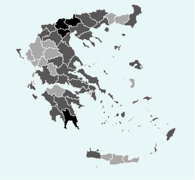
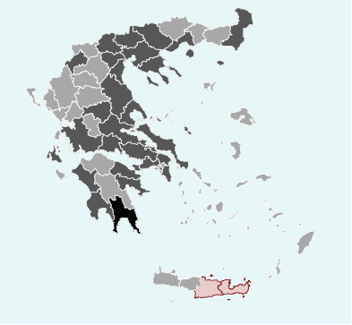
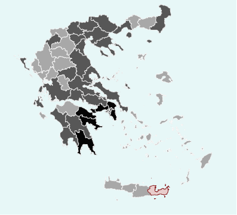
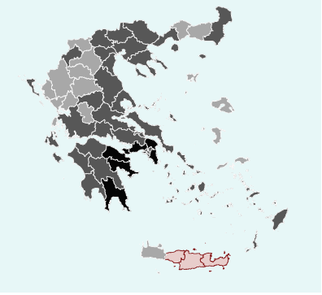

Greek Politics
Change in Greek voting over time
BY Kelly Kiki
Published August 29, 2018
At the moment that European institutions and the Greek government welcome the exit of the country from the bailout program, and before the next Greek national elections in 2019, let’s use historical electoral data from 1978 onwards to present the political change in Greece over time. What is the political footprint that the crisis has left on the Greek voting?
Austerity shakes the ballot box
In May 2012, when general elections take place in Greece for the first time after the country’s agreement on the bailout programs, seven parties are represented in the Parliament –as many as it happened just in 1977, when Greeks voted for second time after the end of the Seven Years of Dictatorship and the establishment of the Third Hellenic Republic in 1974. Three election rounds later, in September 2015, the number of parliamentary parties increases to eight meaning that more parties than ever have captured seats in the current parliament. More parties in the Parliament, more pluralism? Let that be a good question for another discussion to start.
For now, the fact is that PASOK and New Democracy, the former government forces are smashed during the crisis years, while the former minor party SYRIZA succeeds to be the major government force. At the same time, the “neo-nazi” Golden Dawn party firstly captures seats in the Parliament in May 2012 and it retains its percentage since then.
Number of parties represented in the Parliament by round of national elections
More parties than ever have captured seats in the current parliament.

SOURCE: Greek Parliament
Vote percentage for parties represented in the Parliament over the years
Former government forces have been smashed during the crisis years.
NOTE: Only data about parties traditionally represented in the Parliament are included here; Golden Dawn data are also presented, as its representation in the Parliament has been a major change during the crisis years.
SOURCE: Greek Parliament
The Golden Dawn “phenomenon”
Golden Dawn receives the 6.97% and the 6.92% of the vote in May 2012 and in June 2012 respectively; that is the first time the party is represented in the Parliament. Almost three years later, in January 2015, Golden Dawn decreases its percentage to 6.28% losing just one seat in the Parliament that the party gets back in September 2015, when they receive their highest vote percentage (6.99%).
That is the first time no electoral district gives less than 3% of vote to Golden Dawn; the regions of Crete, Heraklion and Lasithi, that did not use to “send” the party to the Parliament, vote for Golden Dawn by 3.94% and 3.95% respectively. At the same time, the party retains its traditionally high percentages in Laconia, Peloponnese and it increases vote percentages both in North Greece and in islands of the Aegean Sea, while refugee crisis is on.
Here is how the Greeks' vote for Golden Dawn breaks by district over the party parliamentary years.
September 2015
Golden Dawn receives its highest percentage (11.44%) in Laconia, Peloponnese. It increases its impact in North Greece and in islands of the Aegean Sea, while Crete votes for Golden Dawn as well.
January 2015
The party enjoys 10.47% vote share in Laconia, Peloponnese which is the only “black” electoral district in Greece. Heraklion and Lasithi in Crete keep giving less than 3% each.
June 2012
Golden Dawn receives its highest percentage (11.44%) in Laconia, Peloponnese and its lowest percentage (2.59%) in Lasithi, Crete; Rethymnon and Heraklion increase their support to Golden Dawn.
May 2012
Three out of four electoral districts in Crete vote for Golden Dawn by less than 3% each. The party receives its highest percentage ever (11.98%) in Corinthia in the north-eastern part of Peloponnese.
SOURCE: Ministry of Interior